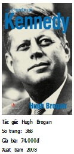

| 1759 | ngày 28/5 | Pitt ra đời | |
| 1773- 1779 | Học tại Cambridge | ||
| 1776 | Tuyên ngôn Độc lập của Hoa Kỳ | ||
| 1778 | William Pitt cha mất Pháp tham gia cuộc chiến tranh chống lại Vương quốc Liên hiệp Anh |
||
| 1779 | Tây Ban Nha tham gia cuộc chiến tranh chống lại Vương quốc Liên hiệp Anh | ||
| 1780 | Hà Lan tham gia cuộc chiến tranh chống lại Vương quốc Liên hiệp Anh Pitt trở thành luật sư tập sự Tổng tuyển cử, bị thất bại với vị trí ở Đại học Cambridge |
||
| 1781 | ngày 23/1 ngày 26/2 | Giành ghế nghị sĩ của Appleby Có bài diễn thuyết đầu tiên | |
| 1782 | tháng 3 tháng 5 ngày 6/7 |
Bộ của North sụp đổ Đưa ra đề nghị cải tổ Nghị viện Trở thành Bộ trưởng Tài chính trong Nội các của Shelburne |
|
| 1783 | tháng 2 ngày 19/12 | Hiệp ước hòa bình của Shelburne bị thất bại và Pitt lên thay Khước từ sức ảnh hưởng của Vua Anh để thiết lập chính phủ Viếng thăm Pháp Kích động Vua Anh làm thất bại Dự luật Ấn Độ của Fox và được bổ nhiệm làm Thủ tướng Anh kiêm Bộ trưởng Tài chính |
|
| 1784 | tháng 1-3 | Bước vào Viện Bình dân Tổng tuyển cử Nghị sĩ của Đại học Cambridge Thông qua Dự luật Ấn Độ của Pitt và bắt đầu những sửa đổi về thuế |
|
| 1785 | Thất bại trong việc kiểm soát phiếu ở Westminster, các đề xuất cải tổ Nghị viện, các đề xuất thương mại ở Ireland Yêu cầu cải tổ kinh tế trong chính phủ |
||
| 1786 | Dự luật công sự của Richmond bị thất bại Khởi đầu hai năm thành công vang dội trên cương vị Thủ tướng Lập kế hoạch Quỹ chìm để loại trừ các khoản nợ quốc gia Hiệp định Thương mại với Pháp |
||
| 1787 | Thống nhất thuế nhập khẩu Thay thế ảnh hưởng của Pháp đối với Hà Lan Lần đầu tiên phản đối bãi bỏ Đạo luật Thử nghiệm |
||
| 1788 | tháng 11/1788 -2/1789 | “Đồng minh ba nước” với Phổ và Hà Lan Khủng hoảng chế độ nhiếp chính | |
| 1789 | Cách mạng Pháp bùng nổ | ||
| 1790 | Khủng hoảng Nootka với Tây Ban Nha | ||
| Tổng tuyển cử | |||
| 1791 | tháng 2-3 | Các cuộc thương lượng với phe đối lập Thất bại trong cuộc khủng hoảng Ochakov với Nga Các cuộc bạo loạn của phe “Giáo hội và Vua Anh” ở Birmingham Cuốn sách Rights of Man (Các quyền con người) của Tom Paine khơi dậy hệ thống cải cách xã hội cấp tiến |
|
| 1792 | tháng 11 | Mở rộng Quỹ chìm Tuyên bố chống lại các tác phẩm xúi giục nổi loạn Cách chức Chủ tịch Viện Quý tộc Thurlow Thất bại trong cuộc thương lượng với Đảng Whig của Porland Nhận chức Quản lý Cụm cảng Cinque do Vua Anh đề nghị Bạo loạn trong nước, Pháp tuyên chiến với Áo và Hà Lan Kích động phong trào liên kết |
|
| 1793 | ngày 1/2 tháng 9 tháng 12 |
Bùng nổ cuộc chiến tranh với Pháp, phản đối đề nghị cải tổ Nghị viện của Grey Thương lượng với Liên minh thứ nhất của các thế lực châu Âu Thất bại ở Dunkirk Thất bại ở Toulon |
|
| 1794 | tháng 5 ngày 11/7 | Hoang mang trước hiểm họa xâm lăng và hoạt động tăng cường của các tổ chức cấp tiến Lần đầu tiên kêu gọi đội quân tình nguyện trên cả nước Đình chỉ lệnh đình quyền giam giữ Lực lượng Hải quân chiến thắng với “Ngày 1/6 Huy hoàng” nhưng lại thất bại ở Hà Lan Liên minh với Đảng Whig của Portland Cuộc viễn chinh Đông Ấn |
|
| 1795 | tháng 12/1794 - 1/1795 tháng 11 tháng 11 và 12 |
Thất bại ở Hà Lan Cải tổ nhân sự Mâu thuẫn với Fitzwilliam Quan đại diện nhà vua ở Ireland Phổ và Tây Ban Nha hòa giải với Pháp Đức tham chiến cùng Pháp chống lại Anh Tham dự vào sự quản lý của Vua Anh “Hai luật” chống lại mưu đồ phản nghịch và các cuộc biểu tình nổi loạn Thông báo thiện ý đàm phán với chính phủ Pháp |
|
| 1796 | tháng 2, tháng 9-12 | Đàm phán hòa bình với Pháp sớm thất bại | |
| 1797 | tháng 2 tháng 4-5 tháng 6 tháng 7- 9 tháng 9 tháng 10 |
Tây Ban Nha tham gia cuộc chiến chống lại Anh Một năm kinh khủng đối với Pitt: Từ bỏ việc tìm hiểu cô gái Eleanor Eden Tiếp tục không trả được nợ của ngân hàng và việc ngân hàng ngừng chi trả tiền mặt Thất bại và rút quân khỏi cuộc chiến Các cuộc nổi loạn trong hạm đội Áo Các quyết định của Nội các trong đàm phán hòa bình Thất bại trong thương lượng với Pháp Cái chết của Eliot Chiến thắng hải quân tại Camperdown Các đề xuất ấn định thuế không được lòng dân chúng |
|
| 1798 | ngày 27/5 tháng 5-6 tháng 8 | Tiếp tục có nguy cơ bị xâm lăng Phát động tình nguyện viên và phong trào quyên góp yêu nước Cuộc đấu súng tay đôi với Tierney Chống lại cuộc nổi loạn ở Ireland Chiến thắng hải quân ở Nile Đàm phán với Liên minh mới chống lại Pháp Ban hành thuế thu nhập |
|
| 1784 | tháng 1-3 | Bước vào Viện Bình dân Tổng tuyển cử Nghị sĩ của Đại học Cambridge Thông qua Dự luật Ấn Độ của Pitt và bắt đầu những sửa đổi về thuế |
|
| 1799 | Tiếp tục cuộc chiến tranh lục địa châu Âu Chính thức cấm các hội có tính chất lật đổ Đẩy lùi cuộc viễn chinh tới Hà Lan Nga thất bại ở Switzerland |
||
| 1800 | Liên minh của Anh và Ireland được ban hành (bắt đầu từ ngày 1/1/1801) Khan hiếm lương thực và tụ tập phá rối Cuộc chiến tranh lục địa châu Âu sụp đổ Thúc đẩy cuộc viễn chinh Ai Cập thông qua Nội các |
||
| 1801 | ngày 14/3 | Xác định cuộc chiến với các cường quốc trung lập ở Baltic Chấp nhận sự chống đối của hoàng gia đối với vấn đề giải phóng Công giáo Ủng hộ người nối nghiệp là Addington trong đàm phán hòa bình với Pháp |
|
| 1802 | tháng 3 | Hòa ước Amiens với Pháp Tổng tuyển cử Pitt ốm nhiều lần trong suốt mùa thu, gây trở ngại đối với việc cầm quyền |
|
| 1803 | tháng 5 tháng 7 | Cố gắng thuyết phục Pitt trở lại Bộ Tiếp tục cuộc chiến với Pháp Quay trở lại Viện Bình dân Lãnh đạo đội quân tình nguyện chống lại họa xâm lăng |
|
| 1804 | ngày 10/5 tháng 12 | Tham gia công kích cách chỉ đạo cuộc chiến của Addington Một lần nữa trở thành Thủ tướng khi Addington từ chức Các cải cách Bộ Tài chính Liên minh với phe Addington |
|
| 1805 | tháng 5 tháng 7 | Đàm phán để thiết lập Liên minh châu Âu thứ ba Thất bại trước Melville Phe Addington rút khỏi chính phủ Tiếp tục cuộc chiến châu Âu Chiến thắng hải quân ở Trafalgar nhưng liên minh lại thất bại ở Ulm và Austerlitz |
|
| 1806 | ngày 23/1 | Pitt mất |
ALEXANDER HAMILTON
Trong số những người góp phần đặt nền móng cho nhà nước cộng hoà Mỹ, không ai có cuộc đời gian truân, gây nhiều tranh cãi và chịu kết cục cay đắng như Alexander Hamilton. Ông là người trẻ nhất trong số những người đã có công dựng nên Nhà nước Mỹ, một chính khách có đóng góp to lớn xây dựng Hiến pháp Mỹ, thúc đẩy sản xuất và đặt nền móng cho nền kinh tế Mỹ…
NAPOLEON
Bằng việc tập trung vào bản chất, cơ chế vận hành và cách sử dụng quyền lực của Napoleon với những dữ kiện vô giá, Geoffrey Ellis đi sâu tìm hiểu cách Napoleon vươn tới danh vọng từ một Trung úy trong cuộc Cách mạng Tư sản Pháp; những tham vọng và thành tựu của ông trên cương vị quan chấp chính cao nhất và khi trở thành hoàng đế trong giai đoạn 1799-1815...

KENNEDY
Hugh Brogan đã đề cập và đánh giá khách quan những mục tiêu và thành tựu của Kennedy xoay quanh các vấn đề hấp dẫn như cuộc ứng cử thành công, chính sách ngoại giao, các chương trình nghị sự, cuộc cách mạng đòi quyền bình đẳng… Qua đó, độc giả có thể hiểu được những ý tưởng của Kennedy đã sống sót như thế nào qua các “bài kiểm tra thực tế” cũng như khả năng lãnh đạo thiên tài của ông...
MAO TRẠCH ĐÔNG
Bao quát 50 năm cuộc đời và sự nghiệp của Mao Trạch Đông, cuốn sách này giúp ta hiểu rõ Mao Trạch Đông đã thành lập Nước Cộng hòa Nhân dân Trung hoa như thế nào vào năm 1949 - một năm đầy rối loạn của đất nước Trung Quốc, và những điều ông làm được trên cương vị Chủ tịch Đảng Cộng sản Trung quốc trong gần ba thập niên sau đó...